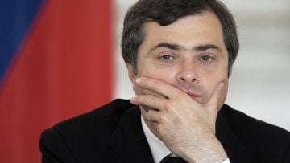

Тайный творец путинизма: Как Владислав Сурков придумал новую Россию
«Я — автор, или один из авторов новой российской системы», — сказал мне Владислав Сурков в качестве представления, — пишет Питер Померанцев с своей статье The Hidden Author of Putinism (перевод ИноСМИ).
В тот весенний день в 2013 году он был одет в белую рубашку и кожаную куртку, напоминая то ли комиссара из 1930-х годов, то ли музыканта из рок-группы Joy Division.«Сфера моей деятельности в Кремле и в правительстве включает в себя идеологию, средства массовой информации, политические партии, религию, модернизацию, инновации, международные отношения и … — тут он делает паузу и улыбается, — современное искусство».Он отказался от речи и предложил собравшимся в аудитории Лондонской школы экономики аспирантам, профессорам, журналистам и политикам задавать вопросы и вести открытую дискуссию.После первого вопроса он говорил почти 45 минут, практически не оставив времени для других тем.

Такова его политическая система в миниатюре: демократическая риторика и недемократические намерения.
Будучи заместителем главы президентской администрации, потом заместителем премьер-министра, а после этого помощником президента по иностранным делам, Сурков управляет российским обществом, как одним большим реалити-шоу.Вот он хлопнул в ладоши, и появилась новая политическая партия.Он хлопнул еще раз, и родилась организация «Наши», являющаяся российским аналогом гитлерюгенда, которую готовят к уличным сражениям с потенциальными сторонниками демократии, и которая сжигает книги непатриотичных авторов прямо на Красной площади.Будучи заместителем главы администрации, он раз в неделю встречался в своем кремлевском кабинете с руководителями российских телеканалов, давая им указания о том, на кого нападать, кого защищать, кого пускать на телевидение, а кому закрывать дверь, как представлять президента, а также сообщая им, каким языком и какими категориями мыслит и чувствует страна.Проинструктированные Сурковым телеведущие из Останкино выбирают тему (олигархи, Америка, Ближний Восток), а потом вещают на протяжении 20 минут, намекая, наводя на мысли, подмигивая, незаметно внушая, но редко говоря о чем-то прямо.При этом они повторяют слова типа «они» и «враги», делая это до тех пор, пока эти слова не отпечатаются в мозгу у зрителя.
Телеведущие повторяют великие заклинания эпохи: президент — это президент «стабильности», полная противоположность эпохе хаоса и неясности 1990-х годов.Слово «стабильность» повторяют в великом множестве вроде бы не относящихся к делу контекстов, пока оно не начнет издавать эхо и звонить, как большой колокол, как будто означая все доброе и хорошее.А любой, кто выступает против президента, есть враг великого божества стабильности.«Эффективный менеджер» — это термин, откопанный в корпоративном новоязе Запада.Но он пережил мутацию и превратился в слова преклонения перед президентом, который и есть самый эффективный менеджер из всех.Эффективность стала оправданием для всего: Сталин тоже был «эффективным руководителем», которому приходилось приносить жертвы ради того, чтобы быть «эффективным».Эти слова вылились на улицы.«Наши отношения неэффективны», — говорят друг другу любовники при расставании.«Эффективность», «стабильность» — никто точно не знает, что эти слова означают на деле.Город преображается, растет; все ощущают, что ситуация далека от стабильности, и что ничего «эффективного» в действительности нет; однако то, как Сурков и его марионетки используют эти слова, дает им собственную жизнь.И они подобно топору опускаются на шею каждому, кто хоть как-то проявляет нелояльность.
Одна из многочисленных кличек Суркова — «политтехнолог всея Руси».Политтехнолог — это новое российское название очень старой профессии визирей, серых кардиналов, волшебников страны Оз.Впервые они появились в середине 1990-х, постучав в ворота власти как ловкие бродячие фокусники, которые низко кланялись и предлагали свои услуги по толкованию мира, а также нашептывали, что смогут перестроить его по-новому.Они унаследовали очень советскую традицию иерархии власти и царскую практику кооптации антигосударственных сил (анархистов в 19-м веке, неонацистов и религиозных фанатиков в веке нынешнем).Все это они слили воедино с новым мышлением на телевидении, в рекламе и в черном пиаре.На самом деле, их первым клиентами были российские модернизаторы.В 1996 году деятельность политтехнологов координировал олигарх Борис Березовский, которого прозвали «крестный отец Кремля».Этот человек первым понял, какой властью и влиянием обладает телевидение в России, и под его руководством политтехнологи сумели обеспечить победу на выборах, казалось бы, безнадежно непопулярному президенту Борису Ельцину, так как убедили народ в том, что Ельцин — единственный, кто может спасти его от возврата реваншистского коммунизма и неофашизма.Они снимали и показывали по телевизору фильмы-страшилки о грядущих погромах, изобретали фальшивые крайне правые партии, исподволь внушали людям, что другой кандидат — это сталинист (хотя в действительности он был скорее социал-демократом), и в целом создавали мираж подступающей «красно-коричневой» чумы.
В 21-м веке методы политтехнологов были систематизированы и централизованы, и координировать эту работу стали из кабинетов президентской администрации, где Сурков сидит за столом, уставленным прямыми телефонами с фамилиями лидеров «независимых» партий, по которым он может позвонить и дать им указания в любое время дня и ночи.Гениальность этого нового типа авторитаризма состоит в том, что вместо примитивного подавления оппозиции, как это делалось в 20-м веке, он пробирается вовнутрь всех идеологий и движений, эксплуатируя их и демонстрируя их абсурдность.Сегодня Сурков финансирует гражданские форумы и правозащитные общественные организации, а уже завтра он может тихо поддержать националистические движения, которые обвинят эти организации в том, что они являются орудием Запада.Он щедро финансировал шикарные фестивали искусств для самых провокационных современных художников в Москве, а потом помогал одетым во все черное и несущим кресты и хоругви православным фундаменталистам, которые, в свою очередь, нападали на выставки современного искусства.Идея Кремля заключается в том, чтобы присвоить все формы политического дискурса, не позволяя никаким независимым движениям развиваться за его стенами.Таким образом, Москва утром может показаться олигархией, а вечером демократией, на обед монархией, а ближе к ночи тоталитарным государством.
Сурков — это не только политический махинатор, он — эстет, пишущий эссе на темы современного искусства и являющийся страстным любителем гангста-рэпа, у которого на рабочем столе рядом с фотографией президента стоит фото Тупака Шакура.
Он также является предполагаемым автором романа «Околоноля».Роман был опубликован под псевдонимом Натан Дубовицкий, а жену Суркова зовут Наталья Дубовицкая.Официально Сурков является автором предисловия к нему, где он отрицает свое авторство, а затем сам себе противоречит.«Автор романа — неоригинальный, помешавшийся на Гамлете писака», — пишет он, и тут же заявляет: «Это лучшая книга, которую я когда-либо читал».В интервью он может очень близко подойти к признанию своего авторства, но полностью сознаваться в этом всегда отказывается.Он написал эту книгу или нет, но Сурков сделал все возможное, чтобы его имя ассоциировалось с ней.И она стала бестселлером, ключевым признанием нашей эпохи, самым тесным приближением к рассмотрению системы изнутри.
Роман является сатирой на современную Россию.Его главный герой Егор — безнравственный пиарщик, готовый обслуживать любого, кто ему платит.Этот бывший издатель поэзии авангарда сегодня покупает стихи у нищих поэтов из андеграунда, а затем продает права на них богатым чиновникам и бандитам с творческими амбициями, которые публикуют эти стихи под своими именами.В этом мире все продается, и даже у самого «либерального» журналиста есть своя цена.Мир пиара и издательского дела, показанный в романе, весьма опасен.У издательств есть собственные банды, и их члены отстреливают друг друга из-за прав на Набокова и Пушкина, а спецслужбы внедряются туда со своими собственными тайными целями.Это как раз такой роман, какие сурковские молодежные организации жгут на Красной площади.
Родившийся в российской провинции у матери-одиночки, Егор вырос в начитанного хипстера, который разочаровался в поздней советской идеологии с ее притворством и надувательством.В 1980-х годах он приезжает в Москву, где начинает вращаться в околобогемных кругах.В 1990-х Егор становится знатоком пиара.В этой биографии много общего с теми фактами, которые нам известны из жизненной истории самого Суркова — а он раскрывает детали прессе лишь тогда, когда считает нужным.Сурков родился в 1964 году.Мать у него русская, а отец — чеченец, ушедший из семьи, когда Сурков был еще маленьким мальчиком.Бывшие одноклассники вспоминали, что Сурков насмехался над любимчиками учителей в комсомоле, носил бархатные штаны, длинные волосы, как у ребят из Pink Floyd, писал стихи и пользовался успехом у девочек.Он был отличником, и учителя читали его сочинения по литературе в учительской вслух.Он не только по собственному мнению был слишком умен для того, чтобы верить в окружавшее его общественно-политическое устройство.
«Поэт-революционер Маяковский утверждал, что жизнь (после коммунистической революции) хороша, и жить хорошо, — писал в подростковом возрасте Сурков.— Но это не остановило Маяковского, и несколько лет спустя он застрелился».Весьма провокационные строчки для ученика советской школы.
Переехав в Москву, Сурков учился в разных вузах нескольким специальностям, от металлурга до режиссера, однако не закончил их, и его взяли в армию (где он мог служить в военной разведке).Во время учебы он постоянно участвовал в разных стычках (с театрального факультета его отчислили за драку).Его первая жена была художницей, прославившейся коллекцией уникальных кукол (которую Сурков позднее превратил в музей).Пока он взрослел и мужал, Россия экспериментировала с различными моделями построения общества, делая это с головокружительной скоростью.Советский застой привел к перестройке, которая привела к распаду Советского Союза, к либеральной эйфории, экономической катастрофе, олигархии и возникновению мафиозного государства.Как можно во что-то верить, когда все вокруг тебя так быстро меняется?
Его влекла к себе московская богема, где исполнители перфомансов начинали осознавать, что такое мутабельность.В те дни вечеринка не могла считаться удачной без Олега Кулика (который изображал бешеного пса, показывая надломленность постсоветского человека), без Германа Виноградова (который расхаживал голым по улицам и обливался ледяной водой), а позднее без Андрея Бартеньева (тот одевался как инопланетянин, показывая, насколько странен этот новый мир).И конечно, без Владика Мамышева-Монро.Этот мастер перевоплощения с богатым репертуаром поз был постсоветским Уорхолом в смеси с Ру Полом.Будучи первым в России мастером дрэга, он начал с того, что предстал в образе Мэрилин Монро, а затем Гитлера («Два величайших символа 20-го века», — говорил он).Потом он изображал российских поп-звезд, Распутина и Горбачева в виде индианки.Он появлялся на тусовках в образе Ельцина, Тутанхамона и Карла Лагерфельда.«Выступая, я на несколько секунд превращаюсь в своего героя», — любил говорить Владик.Его перевоплощения всегда были исключительно и до одержимости точны — настолько, что герой доходил до крайности, начиная разоблачать и разрушать себя.
В это же время Россия открывала для себя магию пиара и рекламы, и Сурков нашел свое призвание.Шанс ему дал обладающий самой приятной среди олигархов внешностью Михаил Ходорковский.В 1992 году Сурков провел первую рекламную кампанию Ходорковского, в которой усатый олигарх в клетчатом пиджаке с широкой улыбкой был изображен держащим в руках пачки денег.(«Приходите ко мне в банк, если вам нужны легкие деньги; я сделал эти деньги, и вы тоже сможете!»— таков был посыл рекламы.)Его изображения появились буквально на каждом автобусе и рекламном щите, и это стало шоком для населения, воспитанного на антикапиталистических ценностях.Российская компания впервые использовала лицо своего владельца в качестве брэнда.Впервые богатство рекламировалось как добродетель и достоинство.Миллионеры в стране существовали и прежде, но им всегда приходилось скрывать свой успех.Сурков почувствовал, что мир меняется.
Затем он работал директором по связям с общественностью в Останкино на первом канале, который принадлежал тогдашнему главному визирю кремлевского двора Борису Березовскому.В 1999 году он пришел в Кремль, где создал имидж президента точно так же, как он создавал имидж Ходорковского.Когда президент выгнал Березовского за рубеж, арестовал и посадил Ходорковского, Сурков помогал проводить соответствующую кампанию в средствах массовой информации.Но теперь у Ходорковского был новый имидж: олигарх уже не улыбался и не раздавал деньги; на сей раз он сидел в тюрьме.Намек был вполне понятен: от обложки в журнале Forbes до тюремной камеры расстояние — всего в одну фотографию.
В ходе всех этих перемен Сурков менял должности, хозяев и идеологии, никогда не сбиваясь с ритма.
Наверное, самый интересный момент в романе «Околоноля» наступает тогда, когда автор переходит от социальной сатиры к описанию внутреннего мира своего главного героя.Егор предстает как этакий «вульгарный Гамлет», который насквозь видит поверхностность своей эпохи, но не способен испытывать истинных чувств ни к кому и ни к чему.«То, что он считал собой, замкнуто было как бы в ореховой скорлупе … Снаружи разгуливали его тени, его куклы … Про себя он думал, что устроен наподобие аутиста, тонко имитирующего связь с абонентами за границей, говорящего с ними подставными голосами, подслушанными у них же, чтобы выудить в окружающей его со всех сторон бушующей Москве книги, еду, одежду, деньги, секс, власть и прочие полезные вещи».
Егор — махинатор, но не нигилист; у него вполне четкое представление о высших силах: Егор ясно видел «высоту мироздания, где в ослепительной бездне играли бесплотные, беспилотные, беспутные слова, свободные существа, как они сочетались, разбегались и сливались в чудесные узоры».
Высота мироздания!Бог у Егора находится за рамками добра и зла, а сам Егор — это его избранный товарищ: слишком умный, чтобы заботиться о ком-то, слишком близкий к Богу, чтобы нуждаться в морали.Он видит мир как место, куда можно проецировать разные реальности.Сурков излагает основы мировоззрения новой элиты, поколения постсоветских суперменов, у которых больше сил, ясности мысли, быстроты и гибкости, чем у их предшественников.
Работая на российском телевидении, я каждый день сталкивался с разными формами такого отношения.Продюсеры с останкинских телеканалов в частной жизни все могли быть либералами, проводившими отпуск в Тоскане и имевшими абсолютно европейские вкусы.Но когда я спрашивал, как им удается примирять свою профессиональную и личную жизнь, на меня смотрели, как на идиота, и отвечали: «Последние 20 лет мы жили при коммунизме, в который не верили, видели демократию, дефолты, мафиозное государство, олигархию; и мы осознали, что все это — лишь иллюзии, пиар».
«Все пиар» — это стало излюбленной фразой новой России.Мои московские коллеги были преисполнены сознанием собственного цинизма и собственной просвещенности.Когда я спрашивал их про боровшихся с режимом диссидентов советской эпохи, как мои родители, они пренебрежительно называли их наивными мечтателями, а мое собственное пристрастие к таким неопределенным западным понятиям, как «права человека» и «свобода», считали заблуждением.«Неужели ты не понимаешь, что у вас власть — такая же плохая, как и у нас?»— спрашивали они.Я пытался возражать, но они лишь сочувственно улыбались в ответ.Верить во что-то и отстаивать свои убеждения в этом мире достойно презрения.Гораздо ценнее способность менять цвет и форму.
Владимир Набоков когда-то раз описал вид бабочек, которые на раннем этапе своего развития были вынуждены научиться менять цвета, чтобы прятаться от хищников.Естественные враги этих бабочек давно вымерли, но они продолжают менять цвета просто из любви к преобразованиям.Нечто подобное произошло и с российской элитой: в советские времена она научилась лицемерить и притворяться, чтобы выжить; и хотя сегодня нет необходимости постоянно менять цвета, элита продолжает это делать — просто потому, что это доставляет ей некую мрачную радость.Это конформизм, поднявшийся до высот эстетического искусства.
Сам Сурков в высшей степени выражает эту психологию.Когда я наблюдал за ним во время его выступления перед студентами и журналистами в Лондоне, он казался мне изменчивым, как ртуть — настолько легко и свободно он менял выражение лица от невинной улыбки до дьявольского в своей пристальности взгляда, и переходил от путаной либеральной проповеди «модернизации» к грозному национализму, изрыгая из себя умышленно противоречивые слова типа «управляемая демократия» и «консервативная модернизация».А затем, сделав шаг назад, он улыбнулся и сказал: «Если нам нужна новая политическая партия, мы должны помочь ей появиться на свет.Нет нужды ждать, пока она сформируется естественным путем».Если внимательно посмотреть на партийцев в поставленном Сурковым политическом реалити-шоу, то мы заметим, что все эти брызжущие слюной националисты и красномордые коммунисты играют свои роли с небольшой иронической усмешкой.
Сурков любит цитировать новые, только переведенные на русский язык постмодернистские термины: крах больших нарративов, невозможность истины, симулякры и так далее.Но уже в следующий момент он рассказывает о том, как презирает релятивизм и любит консерватизм, а потом по-английски наизусть читает «Сутру Подсолнуха» Алена Гинзберга (Allen Ginsberg).Если Запад когда-то подорвал мощь Советского Союза и довел его полного распада, объединив рыночную экономику, привлекательную культуру и демократическую политику (парламенты, инвестиционные банки и абстрактные экспрессионисты слились воедино, чтобы уничтожить Политбюро, плановую экономику и социалистический реализм), то гениальность Суркова заключается в том, что он разорвал эти связи, примирил авторитаризм с современным искусством и, если говорить языком права и представлений для оправдания тирании, многократно препарировал слова «демократический капитализм», пока они не стали означать полную противоположность своему изначальному смыслу.
«Это была первая нелинейная война», — пишет Сурков в своем новом рассказе «Без неба», который он опубликовал под тем же псевдонимом Натан Дубовицкий.Его действие происходит после «пятой мировой войны» в мрачном антиутопическом будущем:
В примитивных войнах девятнадцатого и двадцатого веков дрались обычно две стороны.Две нации.Два временных союза.Теперь столкнулись четыре коалиции.И не то, что двое на двое.Или трое против одного.Нет.Все против всех.
В концепции Суркова не упоминаются священные войны, в ней нет ничего такого, чтобы провоцировать и дразнить Запад.Но есть мрачный образ глобализации, где вместо того, чтобы выступать всем вместе, взаимосвязь стала означать многочисленные соперничества между движениями, корпорациями и городами-государствами, где обветшали старые союзы, такие, как ЕС, НАТО и «Запад», где Кремль может играть на новых изменчивых струнах лояльности и заинтересованности, на потоках нефти и денег, отрывая Европу от Америки, натравливая одну западную компанию на другую, а их вместе — на их собственные правительства, чтобы никто больше не знал, у кого какие интересы, и кто куда идет.
«Случалось, несколько провинций выступали на одной стороне, — продолжает Сурков, — несколько — на другой, а какой-нибудь город или поколение, или пол, или профессиональное сообщество того же государства — на третьей.Потом они могли перейти на другую сторону, иногда прямо в бою.Их цели были очень разными.Большинство понимало войну как часть процесса.… Не самую, может быть, важную часть».
Кремль произвольно переключает сигналы, но всегда к собственной выгоде, и проникает буквально во все: правых европейских националистов он соблазняет обвинениями в адрес Евросоюза, крайних левых завлекает рассказами о борьбе с гегемонией США, американских религиозных консерваторов убеждает в том, что ведет борьбу с гомосексуализмом.В результате на мировую аудиторию с разных сторон воздействует мощная разноголосица, создавая кумулятивный эффект поддержки Кремля.И все эти голоса транслирует канал RT.
Рассказ «Без неба» был опубликован 12 марта 2014 года.Спустя несколько дней Россия аннексировала Крым.Сурков помогал организовать аннексию: он создал целый театр с «Ночными волками», казаками, постановочными референдумами, говорящими по сценарию марионеточными политиками и вооруженными людьми.Новые полезные союзники Кремля — правые, левые, религиозные — скопом поддержали президента.Запад не вводил санкции, которые угрожали бы экономическим связям с Россией.Только нескольких высокопоставленных чиновников, включая Суркова, лишили возможности ездить в Соединенные Штаты и Евросоюз и вкладывать там инвестиции.
«Не отразится ли негативно на вас этот запрет?»— спросил репортер у Суркова, когда тот шел по Кремлевскому дворцу.«Ваши вкусы указывают на то, что вы очень западный человек, — ответил Сурков.— Я могу уместить Европу здесь», — сказал он с улыбкой, указав на свою голову.Позже он заявил: «Я вижу в решении вашингтонской администрации признание моих заслуг перед Россией.Для меня это большая честь.У меня нет счетов за рубежом.В США меня интересуют Тупак Шакур, Ален Гинзберг и Джексон Поллок.Для доступа к их произведениям виза не нужна.Я ничего не потерял».
Данная статья — это отрывок из готовящейся к изданию книги Nothing Is True and Everything Is Possible (Правды нет, и все возможно).
Posted On: 2014-11-12T21:00:00
Content Date: 2014-11-12
Download Date: 2021-07-16
Document ID: L0C04FIH0